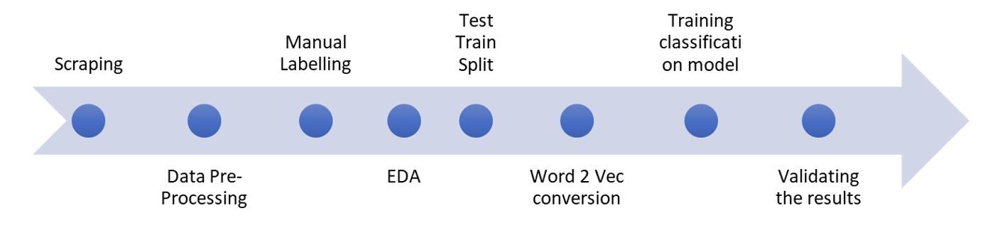
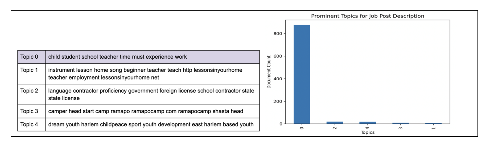
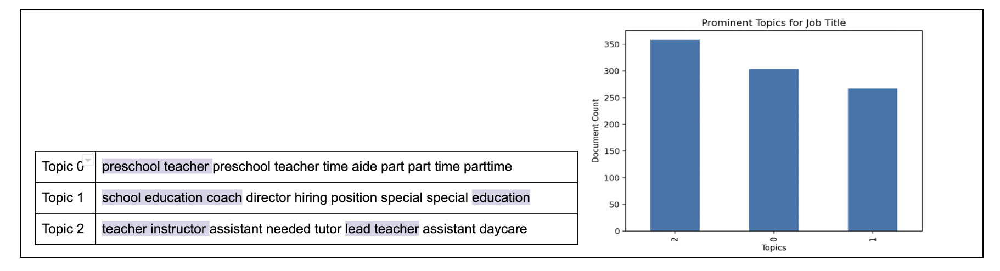
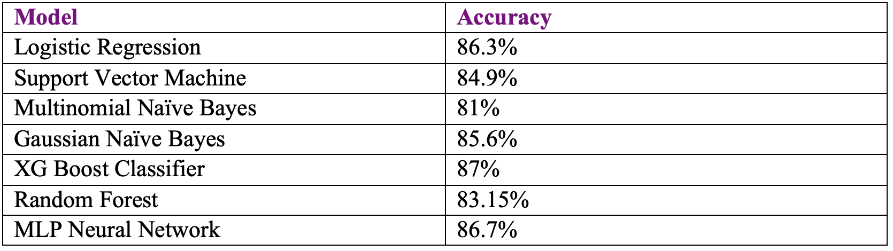
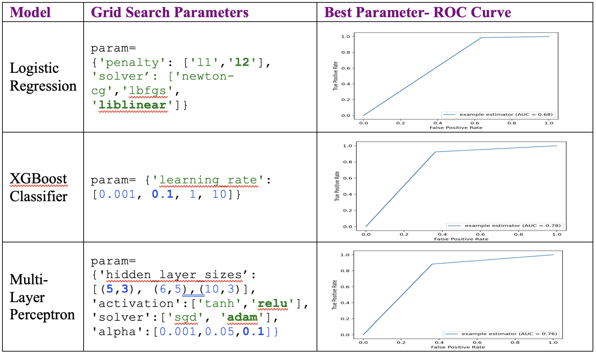

Background
Online advertising, a marketing technique that utilizes the internet to promote services and products, is still growing rapidly, expected to reach US$ 349.6 Billion by 2027 by IMARC Group. Some of the most popular advertising websites in USA are Craigslist, Free Ads Time, FinderMaster, AdvertiseEra and so on. To assist our client Craigslist to have a bigger share of the market, we strive to improve the users’ experience on Craigslist. Job postings, as the very first addition to Craigslist’s website, catch our attention for advancement. We noticed that there are lots of misclassified job postings on the website, which would have caused lower customer engagement and customer retention. If people keep seeing misclassified job posts on the website, they might think it’s an untrustworthy place to look for jobs. Thus, it is very important for Craigslist to help employers put their job postings in the right section on the website.
Who is Craigslist?
Craigslist is an American classified advertisements website with different sections such as jobs, housing, sales, services, and a whole lot more. It works like an online version of a classified section of a newspaper and can be filtered by your local region. Since it is free, people will be willing to put things that people might bother to put if it’s a paid ad. As a result, it is very convenient for people to connect with a huge range of people around the world to find, buy, or sell just about anything.
Subsection of the Project
Craigslist can be a great source to find a job. People can find listings for a wide variety of fair opportunities, from part-time jobs to proper full-time ones. However, you can find a plethora of misclassification on Craigslist, which might cause the users’ inconvenience and inefficiency while searching for jobs in the correct criteria they want. Although Craigslist is not a website especially for job-hunting like LinkedIn, we’d like to improve the job-hunting experiences for people so that we can retain both employers and job seekers and make them keep coming back to the website. It is very important since job listings is one of the sections that Craigslist can ask for fees.
Why Educational Jobs?
With a looming recession and economic turbulence, comes the risk of job uncertainty and losses. Multiple sectors are affected in these times, especially the non-essential ones such as automobile, tourism, and real estate. Education/Private Tutoring domain is no different when in a budget crunch. Even schools cut down on staff.
Craigslist is an established platform that supports a big chunk of US gig economy, including the education sub-sector. A considerable chunk of the population relies on Craigslist to connect jobseekers and employers, and so do people from the fields of education/tutoring. Given the increasing need for this platform in current economic scenario, it is imperative that the right listings are shown to people looking for job/employees. Improperly classified records become a source of frustration and demotivation for people.
We’ve noticed around 20% of misclassification of jobs in education on the website. It would be a time-consuming job if Craigslist hire people to detect those posts and put them to the section that they belong to. The project objective is to catch posts that should not be put in the section of education of job listings, which we believe will add a big value to both our client (Craigslist) and its users. Users will have to spend less time finding the right job they want to apply for, which will lead to better reputation for Craigslist and increase its revenue.Business Analysis
Objective
Using ML, we’ve tried to lower the misclassification rate of education-related job postings on Craigslist for the benefit of people trying to get their next employment through the website. We scraped the relevant data from Craigslist for 82 different US cities. To ensure that our analytics were robust, we took a random sample including cities of all sizes and demographics. Our objective is to enhance users’ experience in finding an education-related job on Craigslist by showing them correct job listings. We will remove jobs that are not related to education to reduce the users’ job investigation time and efforts. To obtain this, we need to train a robust classification model to ensure we reach a decent correctness in classifying the jobs. We have used various machine learning algorithms such as Naive Bayes, Support Vector Machines, Random Forest, and Logistic Regression to classify the jobs into two categories: education-related and non-education related. We have also used various techniques such as hyperparameter tuning, and cross-validation to improve the accuracy of our model. We have also used various evaluation metrics such as ROC Curve and accuracy to evaluate our model's performance. Finally, we have compared our model's performance with other existing models and found that our model outperforms them in terms of accuracy and F1 score.
Data Analysis
Given the business problem and objective decided, a framework was constructed to develop the solution. Identifying this as a classic example of classification problem under supervised learning, the below approach has been used.
Scraping
The Craigslist website has been used to scrape exclusively the ‘education’ sub section under the ‘job’ category. A combination of Beautiful Soup in addition with Selenium HTML parsers are used for the same. List of cities were selected at the first place and then links for all the posts were obtained. Consequently, all the relevant information about the Job postings such as employment type, compensation, title, description etc. were collected.
Data Pre-Processing
This step in the approach involved multiple sub steps given the data has lot of text and thereby not clean. The stages included are as follows:
Performing these steps addressed the dimensionality reduction problem in the earlier steps to be more precise and optimized.
Manual Labelling
For the machine to correctly classify, a proper grouping of correctly and incorrectly classified postings need to be identified. A manual review of all the data was done to correctly tag the misclassified posts. Given the number of negatives or mis classified are comparatively in good number (~20%), any additional sampling technique wasn’t used.
EDA
Before moving on to the modelling, a preliminary understanding of what kind of postings were being posted was analyzed. Based on the collected 1000 postings, topic modelling, an unsupervised learning technique was performed across the descriptions and titles text data. This helped us uncover abstract topics and cluster of words within the dataset which thereby can even use to tag the posts as an additional step in future. The analysis from the topic modelling are as follows:
The top 8 words for each of the topics modelled for job description gives us as idea that most of the posts consist of requirements seeking experienced schoolteachers. The other topics cover a range of requirements consisting of tutors, contractors, beginner teachers, sports coaches etc. While the probability of each post being mapped is higher for Topic 0 (as shown in the graph below), assumptions can be made for misclassified jobs posted in the education section may also consist of relevant words, but the function of the jobs may not be directly related to the education category.
Further 3 topics consisting of top 8 words were analyzed for job titles. This analysis indicated that most job titles are similar or standard for jobs that truly belong to the education category or those that don’t belong to the education category. As shown in the graph below, the distribution of most probable job titles in each topic is almost the same.
Train-Test Split
Moving towards the end objective, it is required to split the labelled dataset into test and train dataset and avoid overfitting the training dataset. The 1000 postings were split in the 70:30 ratio with test data set having 30% of misclassified labels and rest 70% with training data.
Word2Vec
Any supervised or unsupervised modelling technique requires a set of numbers to build the model. As a result, all the text currently present in the data needs to be moved into numbers. Different set of techniques, algorithms and pre-trained models are present for the conversion. However, the results from topic modelling showed a higher similarity to the education posts we were analyzing, thereby to capture that information, we proceeded with utilizing the TF_IDF technique for text vectorization. Bigrams were used to capture more information with constraint on minimum document frequency to eliminate unnecessary terms. For the description text documents, min_df of 6 was given. Whereas a min_df of 3 was used for the titles of these postings which are usually much shorter than the descriptions.
Training Classification Model
The most crucial stage in the entire methodology is the building of a classification model that can accurately identify misclassified posts within the education subcategory. Different classification machine learning models were built on the training dataset. All the vectorized text columns from the training were combined to form the final independent set of X variables. Both the manually labeled column, Y and vectorized text, X are fit into supervised classification algorithms.
Machine learning techniques used to train the training dataset are as follows:
But there needs to be a way to evaluate which model is performing the best before finalizing it with the client.
Validation
This final stage in the process flow helped us analyze which model performed good when compared to the rest. The validation is performed using the rest 30% data which was split earlier.
Before predicting the labels, validation set which are words are also converted to vectors by transforming on to the TF_IDF words vocabulary. As a preliminary analysis, the scores of the different models were analyzed to understand which models performed overall better. The initial accuracy scores for various models are highlighted below:
Given the initial iterations gave good scores for most models, we proceeded with doing hyper parameter tuning to identify the best parameter for the best models. Since the main business context is to identify the misclassified posts and then help client to flag them in the future, looking at only accuracy score can often be misleading in case of classification problems, given the bias in positive and negative samples. So, we considered the area under ROC curve which isn’t affected by the sample bias.
Along with ROC Curves, looking at confusion matrix; help us chose the XGBoost Classifier with a learning rate of 0.1. Keeping in mind the reduction of misclassified posts, reduction of false negatives was of the critical importance in this case.
Conclusion
Using the model built is beneficial to not just the client, Craigslist in this case, but also to the users, which is kind of a win-win situation. It helps users find the relevant posts by escaping the myriad of irrelevant content and thereby improving user experience with the website, which in turn benefits the Craigslist. This additional filtering or flagging thereby provides Craigslist in creating a competitive advantage over others.
Value addition that can be brought to the client Craigslist by implementing this automatic misclassification are as follows:
Coming to the value addition for user by flagging the misclassified posts are as follows:
This way, adopting the model keeps Craigslist and users in a win-win strategy. Also, this increases in trust and reputation, could potentially turn into higher revenues for the craigslist, thereby more reason to implement it.